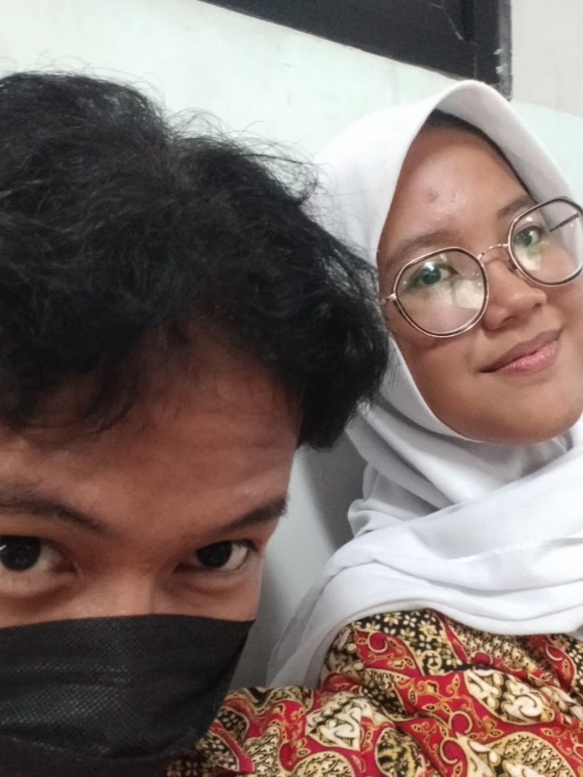
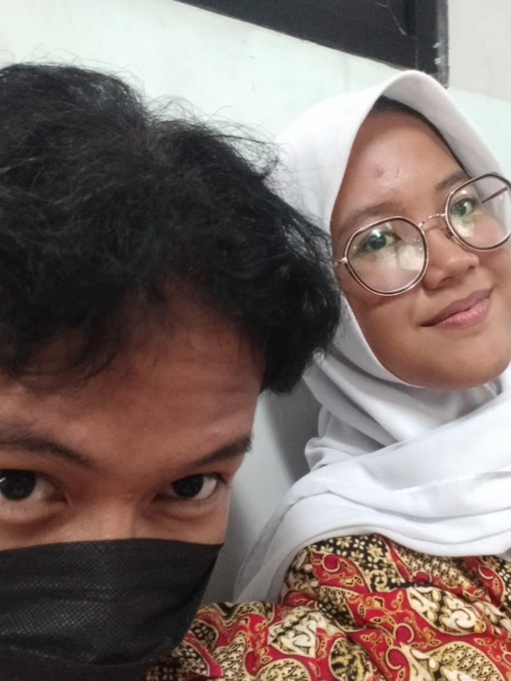

Happy Birthday MUHAMMAD IBNU FAQIH
Oleh: jellyy
Untuk: innuuu
Tanggal: Senin 3 Februari 2025
WARNING
- inii ucapann yangg gaa seberapaa darii jelpaa
- bacanyaa jangann buruu buruu yaaa innuu
- maafff kaloo adaa yangg typoo heheheeh
- selamattt membacaaa sayanggg!!!!!!!!
SPECIAL DAY
hari ini merupakan hari ulangtahun momen yang hanya terjadi setahun sekali. jelpa langitkan semua doa terbaik jelpa untuk innuu. gaa kerasa yaa udah 17 tahun aja, usia 17 tahun bukan sekadar angka, tetapi sebuah tanda bahwa kamu semakin dewasa, semakin banyak pengalaman yang telah kamu lalui, dan semakin siap menghadapi dunia yang lebih luas. di usia yang baru ini, jelpaa berharap semua hal baik selalu menyertaimu. semoga kesehatan, kebahagiaan, dan kesuksesan selalu ada dalam langkahmu. semoga kamu terus menemukan hal-hal yang membuatmu bersemangat, orang-orang yang selalu mendukungmu, dan pengalaman yang membentukmu menjadi versi terbaik dari dirimu sendiri. terima kasih sudah menjadi pribadi yang luar biasa, yang selalu bisa membawa kebahagiaan bagi orang-orang di sekitarmu. hari ini adalah harimu rayakan dengan penuh sukacita, karena kamu layak mendapatkan kebahagiaan di setiap detiknya. selamat menikmati usia 17 tahun yang penuh dengan petualangan baru sayang!
MESSAGES FOR U
to my "favorite art" kenapa favorite art? karna lagu itu awal pertama kali jelpaa setel dann lagu itu bertujuu untukk innuu.. hari ini adalah hari yang istimewa bagii jelpaa, izinkann akuu mengucapkan kataa demi kata yang penuh cinta dan kebahagiaan untuk muu! selamat ulang tahun, SAYANGG-!! it's your special dayy, selamat bertambahh usiaa pacar jelpaa, semoga makin dewasa, semoga semua cita cita kamu terwujud, makin sayang sama keluarga, mendapatkan hal baik yang selalu beriringan bersamamu, dimanapun kamu beradaa, selalu dikelilingi orang orang baik, diberii keselamatan dimanapun innuu beradaa , semoga semesta abadi berpihak innuu, semoga jalan untuk mencapai masa depan yang cerah selalu dipermudahkan, teruslah melangkahh dan berbahagiaa diusia mu yangg baruu inii. akuu selaluu bangga atas setiapp prosess yangg sudah kamuu laluii, i will always support u from afar. kamu adalah sumber kebahagiaan bagii jelpaa. bersama innuu hari hari jelpaa menjadii penuhh warnaa dan kegembiraan, akuu bersyukur karena memiliki kesempatan untuk berbagii cintaa dan kebahagiaan samaa innu setiap hari. innuu adalah orang yangg istimewa bagii jelpaa, kamu adalah orang yang selalu ada padaa saat jelpaa butuh. bersamamu akuu merasa lengkap, aku berjanji akan selalu melindungi dan mencintai dengan sepenuh hati. kalo adaa masalah kitaa harus selesai kan bersamaa samaa, gaaa boleh berantem berantemm gabaikk kataa mamaa. terimakasii yaaa sayangg terimakasii udaaa jadii orang yang selalu adaa buat jelpaa, terimakasii udaa sabarr dengan sikap sikap yang suka random dan childish ituu, satu hal yang kamu harus tau AKU HANYA MENCINTAIMU tidak dengan orang lain diluaran sana, just wanna say that i'm lucky to have you, terimakasii udaa mau terimaa semua kelebihan dan kekurangan akuu, kamu gaa perluu jadii orang lain untuk buatt akuu senangg, cukupp jadii dirimu sendiri saja jelpaa sudaa senangg lebihh darii itu. i wanna tell uu something, kali ini about my feeling, kamuu jangann negatif thinking tentangg sayang jelpaa kee innuu, karnaa sama kamuu aja udahh cukup, JELPAA MAUNYA CUMA INNUU, i hope u too. punyaa kamuu ituu salahh satu hall yangg buatt akuu beruntung bangettt, akuu hampirr jadii orang yangg gaa percayaa apaa ituu artii ketulusan, setiaa darii sekian banyak kehilangan, akuu bersyukur dikasii kamuu dipertemukan kamuu. kamuu adalah RUMAH yang sebenarnya. inii alasann kenapaa akuu memilihh kamu dari beribuu banyakk nya lelakii diluar sana, tapii akuu milih kamuu karnaa akuu punyaa rasa nyamann sendirii padaa saat disamping kamuu. sekarangg kamuu jadi orang yang PALING PENTING dihidupp jelpaa setelahh keluarga jelpaa. kamuu yangg terbaikk, tetepp kayaa ginii teruss yaaa sayangg, gaa bolehh sedikitt punn berubahh kitaa belajarr dewasaa barengg bareng, apapunn masalahh kitaa nantii. akuu yakin kitaa punya kekurangan dan kelebihan jadii kita harus melengkapi satu sama lain, kitaa haruss lewatin ituu semuaa bersama samaa, akuu mauu salingg belajarr buat jadi support system, selaluu adaa dalamm hall apapunn itu, kamuu haruss ingett kaloo sekarangg adaa akuu, akuu bakall selaluu berusaha untukk jadii yangg terbaikkk dann nemenin innuu teruss. selamat ulang tahun, sayangkuu!! semoga hari ini menjadi awal dari tahun yang penuh kebahagiaan bagimu. I LOVEE UU MOREE ANYTHINGG SAYANGGG
GALLERY

 

- yayyy sudaa sampaii bawahh
- taraaa sudaaa habiss
- gimanaa capee yaaa bacaa tekss sepanjangg itu??